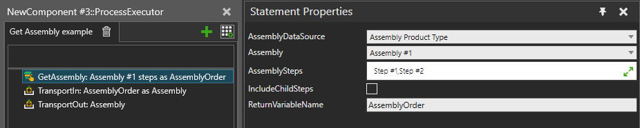
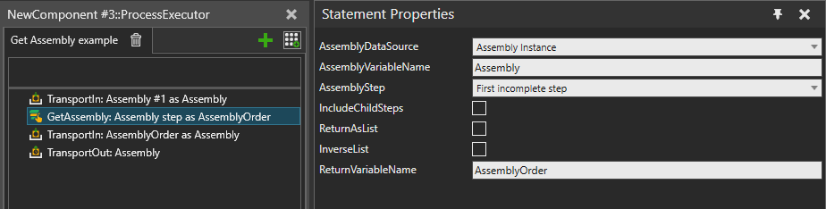

Creates an Assembly Order object that defines a subset of an assembly,
which can be passed to other statements to perform statement-specific
actions to the selected Assembly Steps. All Assembly Steps are owned by
an Assembly Product Type, so an Assembly Order always specifies a single
Assembly Product Type as well.
AssemblyDataSource Assembly Product Type:
The Assembly Order, including the Assembly Product Type and Assembly Step
selection, can stay the same through the simulation run and be reused.
The Assembly Steps can be freely selected from the chosen Assembly Product
Type.

AssemblyDataSource Assembly Instance:
This mode should be chosen if a process needs to handle changing types
of Assembly Instances or if the Assembly Instances have different states
of completion when they arrive. The mode allows a generic selection of
a single Assembly Step using few different rules. Use this mode, for example,
to fully assemble or disassemble any Assembly Instance by using a loop
or to make a generic Process implementation that advances the work on
the Assembly Instance by one step and then passes it forward.

| Name | Description |
AssemblyDataSource |
Input mode defining which properties should be used for
generating the output. |
AssemblyVariableName |
Name of the Process variable where to get the Assembly Instance. |
AssemblyStep |
Selection mode defining which step should be selected from
the Assembly Instance. |
Assembly |
Assembly Product Type to use as data source and to select the Assembly Steps from. |
AssemblySteps |
Assembly steps to include as “selected” in the Assembly Order. |
IncludeChildSteps |
Whether all descendant steps of the selected Assembly Steps should be also included. |
ReturnAsList |
When True, the statement outputs a list of Product Instance references instead of creating an Assembly Order. This output can be used to inspect or manipulate Product Instances that are in an assembly without taking them out first. The list is created in the correct assembling order of the Assembly Product Type. |
InverseList |
Defines whether the Product Instance list should be output in reversed order, which is the disassembling order of the Assembly Product Type. Applicable only when ReturnAsList is set to True. |
ReturnVariableName |
Name of the Process variable to use for storing the result. The type of the variable will be either an Assembly Order or a list of Product Instances depending on the ReturnAsList selection. |